This demo uses multirate, multistage filter design to address the challenge of designing filters with narrow passbands and transition bands, while minimizing the filter order and computational load.
Multirate filters provide a practical approach to designing and implementing finite impulse response (FIR) filters with narrow spectral constraints. In this demo we will discuss multirate filters which change the input data rate at one or more intermediate points within the filter itself while maintaining an output rate that is identical to the input rate. These filters can achieve both greatly reduced filter lengths and computational rates as compared to standard single-rate filter design.
To illustrate the design process, we will provide an example of a multirate lowpass with a very narrow passband.
Consider the design of a lowpass filter that preserves all the frequencies below 70 Hz, removes all frequencies above 80 Hz, and runs at an input sample rate of 8k Hz. The filter cutoff frequency is therefore 80 Hz. In order to completely specify an FIR filter, we must also specify the amount of desired maximum passband ripple (for this example, 0.0087 or 0.15 dB peak-to-peak) and minimum stopband ripple (1e-4 or 80 dB of attenuation) that we wish to achieve.
For a single-rate equiripple FIR filter, we can estimate the order of the filter using the firpmord function.
Fpass = 70; % Hz Fstop = 80; % Hz Rpass = 0.0087; % 0.15 dB peak-to-peak Rstop = 1e-4; % 80 dB Fs = 8000; % Hz [order,Freq,Mag,weights] = firpmord([Fpass Fstop],[1 0],[Rpass Rstop],Fs); order
order =
2549
According to our filter order estimator, this design requires an order 2549 FIR filter. We can now call the Parks-McClellan filter design algorithm with this filter order estimate to obtain the filter coefficients. Then we will use the Filter Visualization Tool (FVTool) to view the filter's magnitude response and check if it meets our requirements.
b = firpm(order,Freq,Mag,weights); hd = dfilt.dffir(b); hfv = fvtool(hd,'Fs',Fs); % Cache handle to FVTool. set(hfv, 'Color', [1 1 1])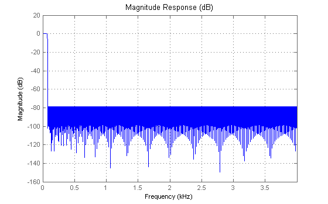
If we look closely we can see that our filter doesn't meet the 80 dB stopband attenuation. In addition, taking a closer look at the passband ripple (in the plot below), we notice that the filter doesn't meet the requirements (0.15dB peak-to-peak) there either.
axis([0 .1 -0.10 0.10]);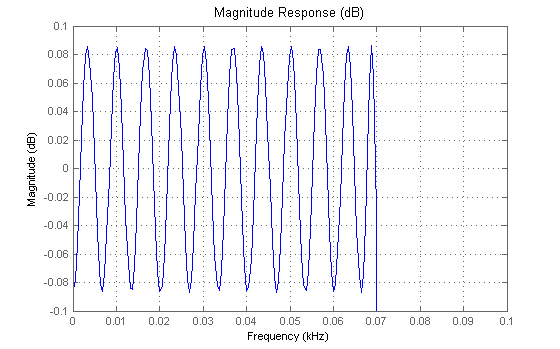
After a few iterations we find that increasing the order by 35 produces a filter which meets our passband and stopband ripple requirements.
order = order+35
b = firpm(order,Freq,Mag,weights);
hd = dfilt.dffir(b);
setfilter(hfv,hd); % Replace filter in FVTool with higher order filter.
order =
2584
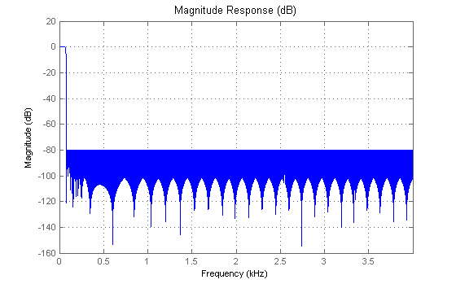 The filter's magnitude response plot above shows that this new filter with order 2584 (i.e., 2585 coefficients) does indeed meet the 80dB stopband attenuation requirement. Now, let's zoom-in the passband to verify that the filter does meet the 0.15 dB peak-to-peak passband requirement - which it does.
axis([0 .1 -0.10 0.10]);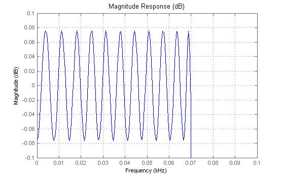
Assuming that one multiply and accumulate (MAC) operation is required per filter coefficient, the required computational rate is (order+1) MACs/sample * Fs samples/sec which is
(order+1)*Fs
ans =
20680000
or just over 20 million MACs/sec (multiply-accumulate operations per second).
Note that the bandwidth of the passband region of the single-rate filter is quite narrow with respect to the sample rate. Applying the Nyquist theorem we conclude that the minimum sample rate necessary to reconstruct a signal with 80 Hz bandwidth is 160 Hz, and this requires only 160/Fs or 1/50 the rate at the output of the filter. This implies that we could decimate the output by 50 (i.e., remove 49 out of every 50 samples) without aliasing the output of the signal.
The decimation can most efficiently be performed with a polyphase FIR decimator filter which reduces the computational rate by the decimation factor, M. The polyphase FIR decimation filter is structured in such a way as to balance the computation of this one output sample over M consecutive inputs, thereby obtaining the noted reduction in computational rate.
However, decimation is only half the story. For general multirate filtering, we assume that the output rate is equal to the input rate. Thus, we need to interpolate the output of the polyphase FIR decimation filter back up to the original input rate. This may be performed by the cascade of an upsample operation (in which L-1 zeros are inserted after every sample) followed by an FIR filter which is most efficiently performed with a polyphase FIR interpolation filter. Similar to the decimator, this implementation may skip the filter computation for the zero-valued samples, achieving a reduction in the rate of computation.
Based on this development, we can see that the cascade of polyphase FIR decimation and interpolation filters will form an efficient, multirate filter. Since the magnitude response of cascaded filters is additive, we must decrease the passband ripple requirement for each filter. For the same reason, we can also decrease the stopband attenutation requirements. The net result of making the passband ripple more stringent while relaxing the stopband attenuation requirements is a reduction in filter length. Moreover, the multirate filter design will also reduce the computational load.
Returning to the lowpass filter example, we can choose to decimate the filter output by a factor of 48 (slightly less than the maximum decimation factor of Fs/160, or 50 as a margin of safety). We will use the multirate filter objects (mfilt) to construct a single-stage FIR multirate filter.
Rp = 10^((.15/2)/20)-1; % reduce passband ripple to half of 0.15 dB Rs = 10^((-80/2)/20); % reduce stopband attenuation to half of -80 dB [order,Freq,Mag,weights] = firpmord([Fpass Fstop],[1 0],[Rp/2 Rs],Fs); order
order =
1753
b = firpm(order,Freq,Mag,weights); hm1 = mfilt.firdecim(48,b); hm2 = mfilt.firinterp(48,b)
hm2 =
FilterStructure: 'Direct-Form FIR Polyphase Interpolator'
Numerator: [1x1754 double]
InterpolationFactor: 48
ResetBeforeFiltering: 'on'
States: [36x1 double]
NumSamplesProcessed: 0
We will use FVTool to view the composite magnitude response of both filters connected in series.
Hm = cascade(hm1,hm2); set(hfv, 'Filters', Hm, 'Fs',Fs);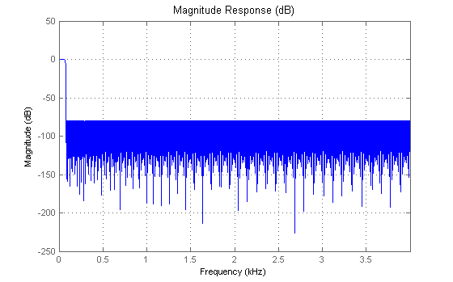
Once again we can see from the filter's magnitude response plot that the filter met the 80dB stopband attenuation requirement. Let's zoom-in the passband to see if it met the 0.15 dB peak-to-peak passband requirement.
axis([0 .1 -0.10 0.10]);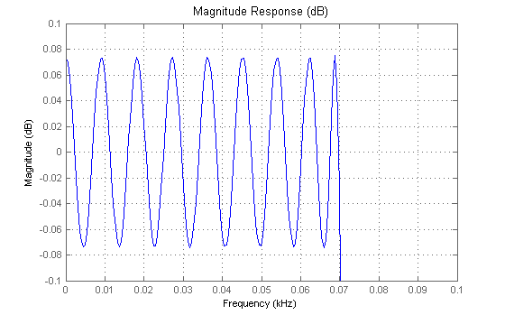
Indeed the filter meets both the passband and stopband requirements.
Note that the filter order has decreased to 1753, due to the relaxed filter specifications, so the computational rate for the single-stage multirate filter is
(order+1)*Fs*(1/48)*2
ans = 5.8467e+005
approximately 584 k MACs/sec. The factor of 2 is to account for both the decimation and interpolation section.
Additional design efficiency can be achieved by using several cascaded multirate stages, which further reduce the total number of filter coefficients. For example, we can use two stages of decimation using 12 and 4, or 24 and 2, or any other combination of factors that multiply to 48. Choosing the first pair of factors, the corresponding FIR decimators and interpolators are designed below using multirate filter (mfilt) objects.
The first stage decimates by a factor of 12; thus, the corresponding first-stage filter must cut off before 1/12 of the sampling frequency. Also, because the attenuation of the passband and stopband of cascaded filters is additive, once again we have to increase the passband ripple specification and relax the stopband attenuation requirements. So, we will use Rs as calculated in the single-stage multirate section above. However, since the passband will be affected by all four filters, we have to divide our original passband ripple requirement by four (instead of 2).
M1 = 12;
newFs = Fs/M1;
Fpass1 = (1/M1-.03)*Fs/2;
Fstop1 = (1/M1)*Fs/2;
Rp = 10^((.15/4)/20)-1; % reduce passband ripple to one-fourth of 0.15 dB
[order1,Freq1,Mag1,weights1] = firpmord([Fpass1 Fstop1],[1 0],[Rp/2 Rs],Fs);
order1
order1 = 160
b1 = firpm(order1, Freq1, Mag1, weights1); hm1 = mfilt.firdecim(M1,b1);
The second stage filter is then responsible for attaining our final filter requirements (70 Hz passband, 80 Hz stopband), but now operates at 1/12 the original sample rate. The second-stage filter requires (coincidentally) another order 160 filter.
[order2,Freq2,Mag2,weights2] = firpmord([Fpass Fstop],[1 0],[Rp/2 Rs],newFs); order2
order2 = 160
M2 = 4; b2 = firpm(order2, Freq2, Mag2, weights2); hm2 = mfilt.firdecim(M2,b2);
Calling FVTool with the two multirate filter objects, hm1 and hm2, we can see the magnitude reponse of each decimation filter.
set(hfv, 'Filters', [hm1,hm2] ,'Fs',[Fs newFs]); legend(hfv,'Decimator M=12','Decimator M=4');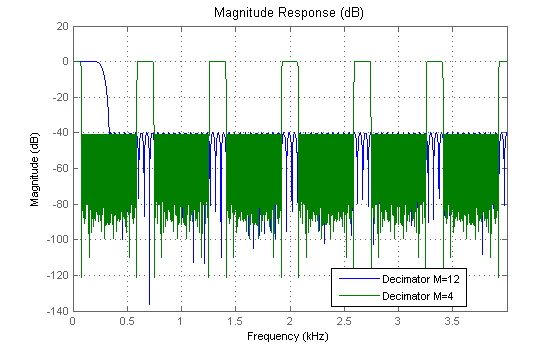
This design therefore requires a total of 322 coefficients, which is significantly fewer than the single-stage design (1753 coefficients). The rate of computation for the decimation stage of the two-stage design is
(order1+1)*newFs + (order2+1)*newFs*(1/M2)
ans = 1.3417e+005
or approximately 134 kMACs/second.
Using the multirate filter (mfilt) object's cascade method we can connect the two decimators in series and view their combined magnitude response using FVTool. We'll use FVTool's addfilter method to overlay the composite filter response over the existing decimation filter responses in FVTool.
Hdecim = mfilt.cascade(hm1,hm2)
Hdecim =
FilterStructure: Cascade
Stage(1): Direct-Form FIR Polyphase Decimator
Stage(2): Direct-Form FIR Polyphase Decimator
ResetBeforeFiltering: 'on'
NumSamplesProcessed: 0
set(hfv, 'Filters', [hm1,hm2,Hdecim] ,'Fs', [Fs newFs Fs]); legend(hfv,'Decimator M=12','Decimator M=4','Overall Decimator')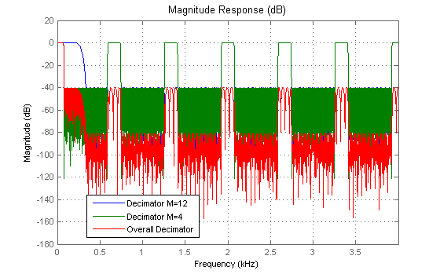
Once again using the multirate filter objects we will create two interpolators, one that interpolates by 4 and one that interpolates by 12, to upsample the signal back up to its original rate. Since the interpolators are indentical to the decimators, we will use the filters hm1 and hm2 designed above. This leads to a total of 134 k MACs/sec for the interpolation stages.
L1 = 4; hm3 = mfilt.firinterp(L1,b2); L2 = 12; hm4 = mfilt.firinterp(L2,b1);
The rate of computation for the interpolation stage of the two-stage design is (as in the decimation stage)
(order1+1)*newFs + (order2+1)*newFs*(1/L1)
ans = 1.3417e+005
approximately 134 kMACs/second. Again we can view their individual responses, along with their composite response using FVTool.
Hinterp = mfilt.cascade(hm3,hm4); set(hfv, 'Filters', [hm3,hm4,Hinterp], 'Fs', [newFs Fs Fs]); legend(hfv,'Interpolator L=4','Interpolator L=12','Overall Interpolator')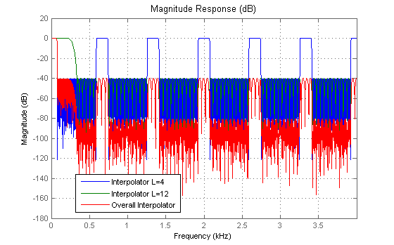
The overall multirate, multistage filter response can be obtained by cascading the decimation stage with the interpolation stage.
Hoverall = mfilt.cascade(Hdecim,Hinterp); set(hfv, 'Filters', Hoverall, 'Fs', Fs, 'Legend', 'off');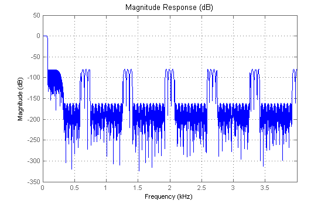
Zooming in we can verify that the filter met the stopband attenuation requirements.
axis([0 .1 -100 10]); % zoom-in to verify that it meets stopband attenuation.
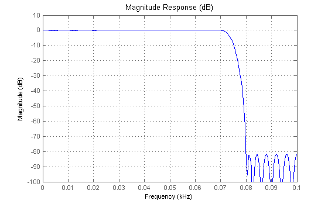 Likewise, we can zoom in to the passband to verify that the filter met the passband ripple requirement.
axis([0 .1 -0.1 0.1]);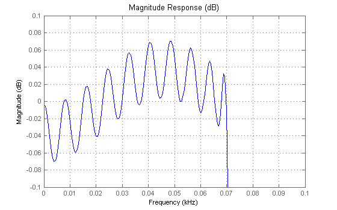
A comparative summary of the single-rate, single-stage multirate, and two-stage multirate design examples are shown below.
%Design technique Total FIR Computational Rate % Coefficients (kMACs/sec) %--------------------------------------------------------------- %Single-rate 2585 20,680 %Single-stage multirate 1753 584 %Two-stage multirate 322 268
Note that the two-stage, multirate filter design can be further improved (i.e., shorter filters and reduced computational rate) by optimizing the choice of decimation factors.